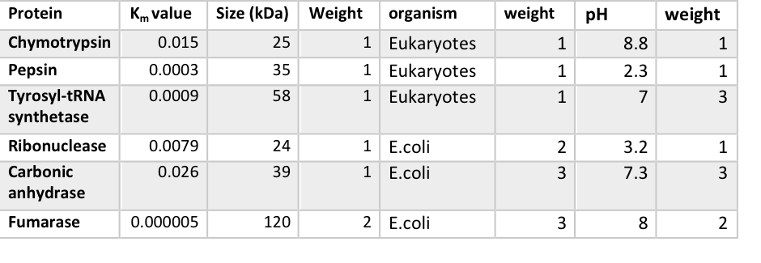

Mathematical Modelling describes complex biological system with mathematical concepts. Often models are set up to predict and simulate biological behaviours. Once, established the parameters need to constantly be optimised with experimental data in order to fit reality to its maximum. Nevertheless, the starting point of a model is not that straight forward, if no experimental data is yet available, reasonable assumptions based on literature, logic and quantitative analysis need to be made. We applied specific methodologies when deciding on the initial values for our models., the following section will summarise the approaches taken for the rate kinetics equations and sensitivity analysis equations.
Sensitivity Analysis is conventionally used for parameter optimisation. A range of independent variables are tested in this technique and their impact on the dependent variable is evaluated. This allows to determine the optimal parameter value.
Assessing the impact specific independent variables have on the rate of intimin transport (dependent variable)
The equation below describes the rate of intimin production in terms of of Km and Vmax
Parameter sampling, aka ensemble modelling, is a method of parameter optimisation, which relies on the random sampling of parameter values within a specified range. A probability density function (PDF) determines the distribution of the continuous random variables evaluated in the function. Parameter sampling considers biological noise, making it a more realistic representation of the behaviour of a biological system.
Assessing the impact of randomly generated discrete variables on the rate of transport of intimin.
The weights of the raw data obtained from literature were assigned with respect to the characteristics of intimin
Data collection to optimise the value of Km
Weighted mean: 0.0147
Data collection to optimise the value of Vmax
Weighted mean: 300000 (1 s.f.)
Probability density functions are functions of continuous random variables. The function considers the integral of this random variable and determines the probability that lies within a specified interval. The sample size, the standard deviation and the weighted mean are the 3 parameters that need to be implemented in the PDF function. We can then plot the rate of transport with Km /Vmax values randomly selected from the interval and identify the optimal parameter value.